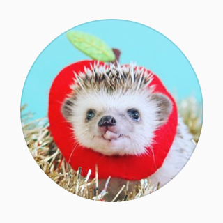
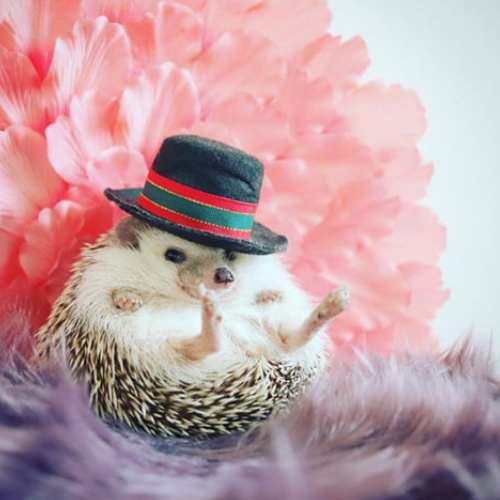
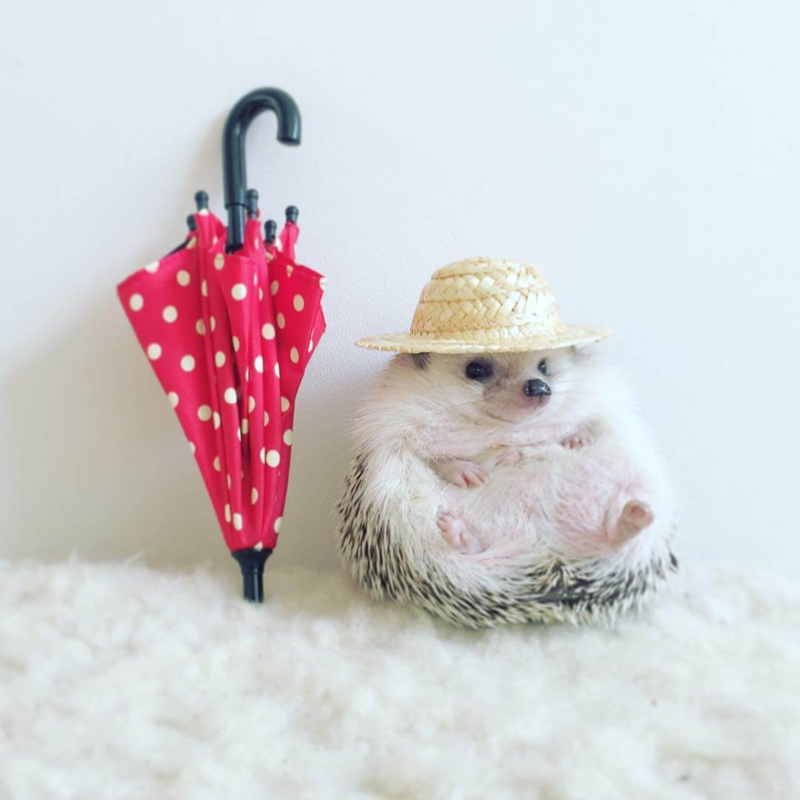
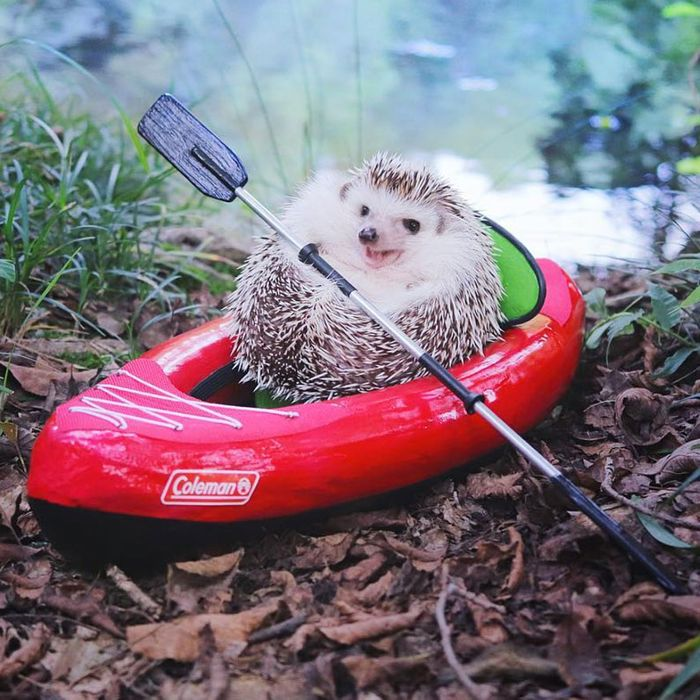
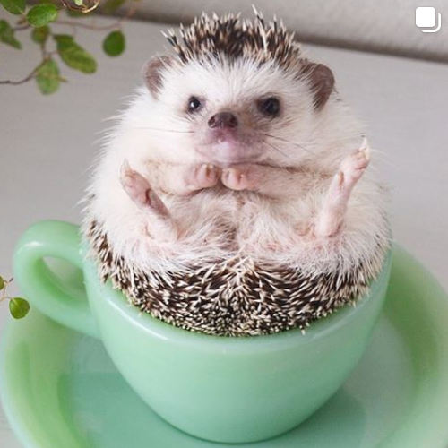
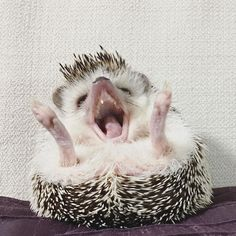
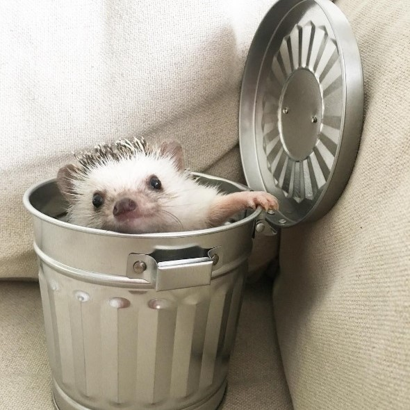

01、Monaka & Azuki the hedgehog (@hedgehog_azuki)


日本刺蝟界的先驅
Azuki(又稱小紅豆)可說是日本最有名的刺蝟，萌萌的模樣吸引不少網友追蹤，也因為牠的出現讓更多人進一步認識並飼養刺蝟，順帶一提牠最喜歡吃的東西是蘋果和蟲蟲！

我還有相關周邊哦
由於小紅豆的飼主也經常拍攝情境照，其火紅的程度讓小紅豆在日本陸續出了兩本照片寫真集以及兩款系列的扭蛋，寫真集甚至被編輯成外文版本出售到歐洲去！

和企業產品的合作
不僅是網友，就連日本企業也注意到受歡迎的小紅豆而邀約合作，有運動品牌特製小尺寸的露營用具請小紅豆拍攝露營體驗照，還有與麵包店合作推出小紅豆包裝的餅乾！
02、Sky the hedgehog /Fu and Ku (@tomtom1486)

蟲蟲讓我失去萌樣
Sky(又稱天空君)是一隻人氣不輸給Azuki(小紅豆)的網紅刺蝟，平常一副天真又無害的表情是牠高人氣的原因之一，遇到最喜歡的蟲蟲時會瞬間激動起來狂吃！

喜歡和朋友在一起
雖然遇到愛吃的蟲蟲會暴動，但平時的天空君還是很溫和的，只要在飼主每隔一段時間舉辦的刺蝟聚會上遇到同伴時，還會發出纖細又有點尖銳的高音，雀躍地不斷嗶嗶叫！

也是有崩壞的時候
除了牠天真無邪的表情之外，反差萌也是賣點之一！天空君常常會突然冒出很有"笑"果的表情，例如張開嘴巴打哈欠的模樣、睡覺時還一邊吐舌頭的樣子，每當飼主將這些碰巧拍到的畫面發在IG上時，瀏覽次數總是相當壯觀！